第二阶段
主旨类
总
 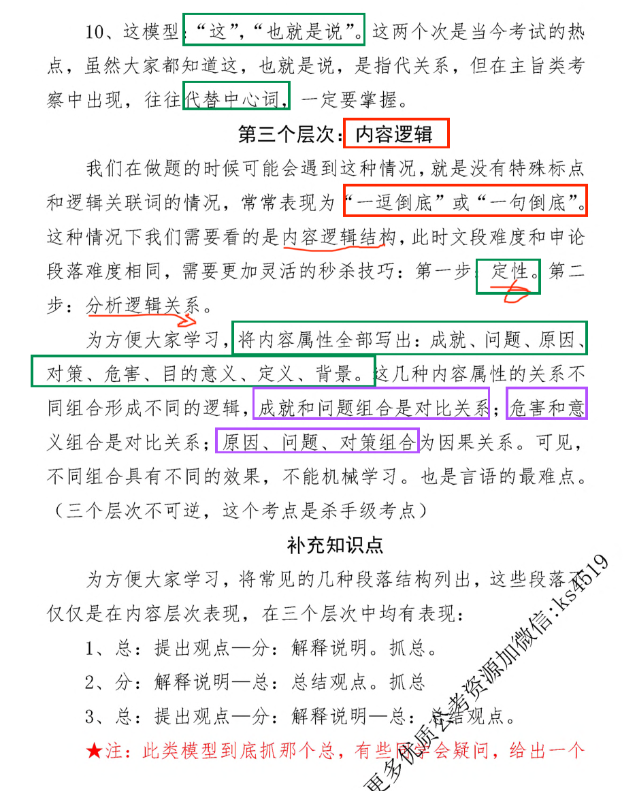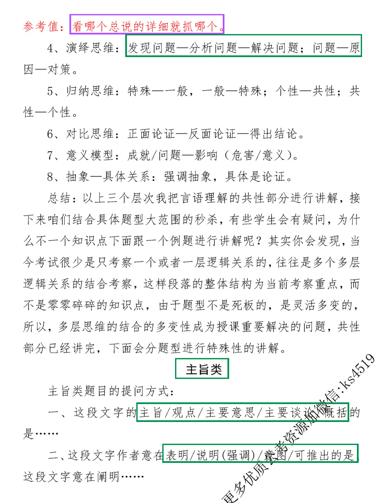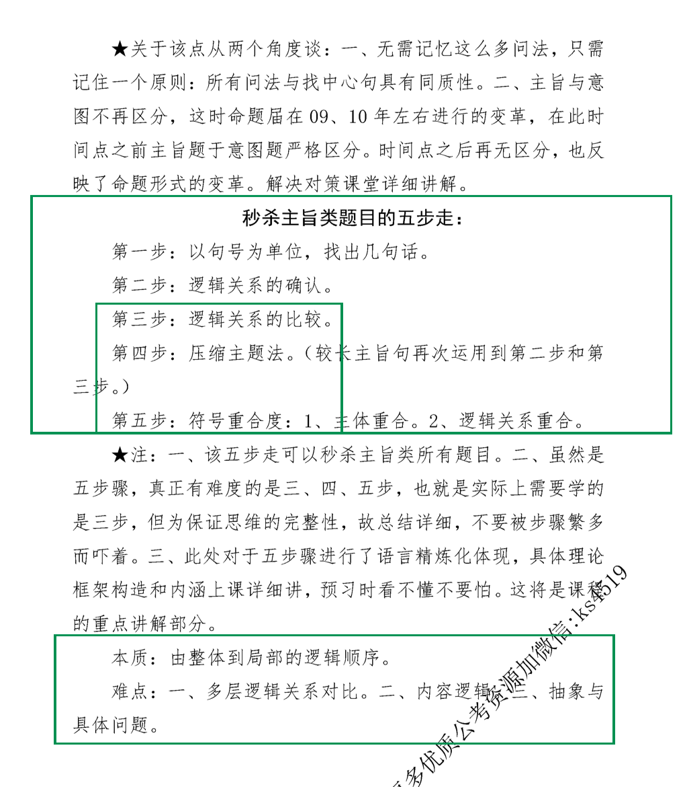
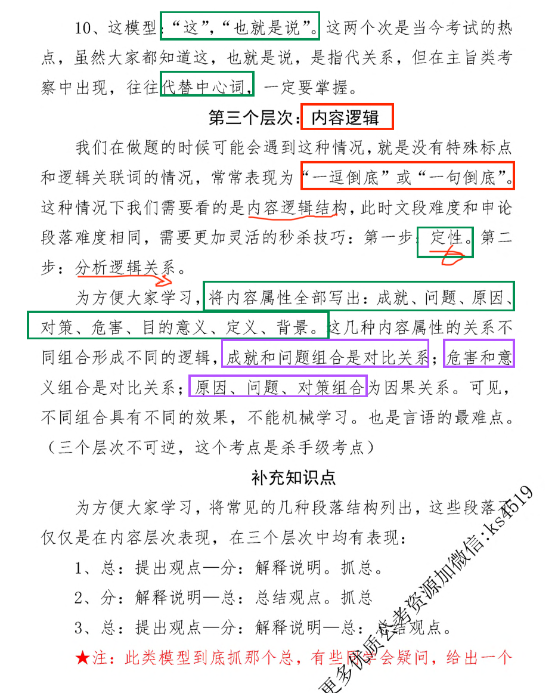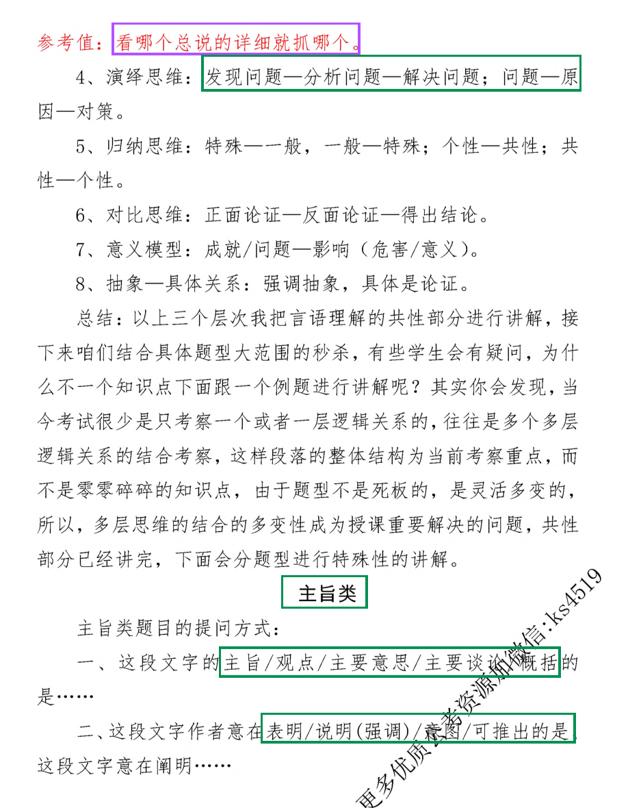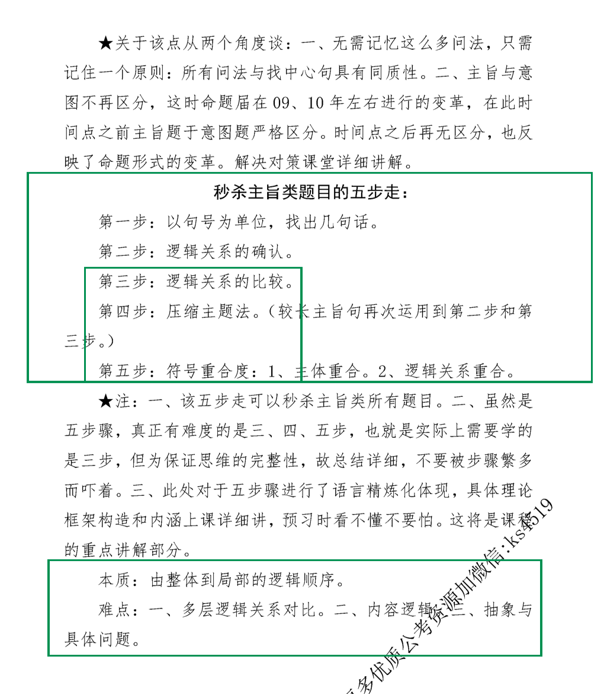 总
内容逻辑
特点：没有特殊的标点，没有逻辑关联词
分类
- 举例关系
- 解释关系
- 主题关系
- 定性
总
问主旨选问题
问意在选对策
解释
特征：与原文相符的、正确的
解题思路
第一步：逆向做题法；
第二步：压缩答案主体
第三步：代入法
以句子为单位，勾画每句主语，快速代入。
从A开始，找一个关键词，去题干找，找不到就跳过，找到再看第二个主题然后看逻辑关系。
不需要画句子，是代入排除法
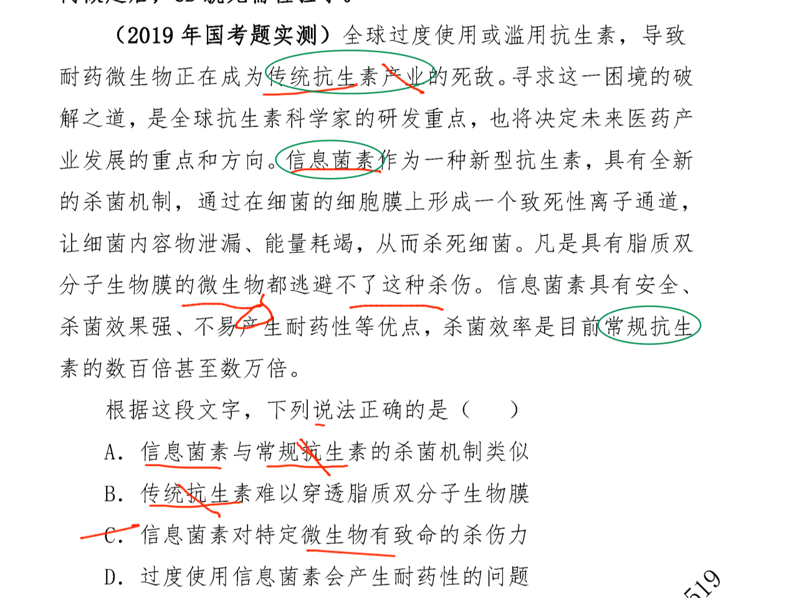- 填空
- 推断下文
——分界——
如果你可以把一个复杂的事物通俗的讲出来，就是真的理解了。
鉴于言语理解题量大【30道】& 正确率低【60% ↓】& 没有整体与部分的概念
必须重来一遍，形成资料分析的那种思维。
言语理解备考策略
大纲解读
时间安排
- 40道题35分钟
- 30道题27分钟
逻辑填空备考
重在找规律
- 前期不要在乎时间，主要找规律，巩固基础
- 积累实词与成语
- 一定要明白考的是什么，是哪个知识点！！！
依次填入空缺部分最恰当的一项是：
A.鼓励 特立独行 相提并论
B.滋生 针锋相对 同日而语
C.允许 振聋发聩 一目了然
D.容纳 惊世骇俗 望其项背
粉笔解析
拿到题首先我们发现考查三个空。
解析
从第一空看起来，句子中出现 “和”表并列，空缺部分需搭配两个词，分别为 “批判的意识”和“更多的异端”
“批判的意识”在社会中是鼓励、希望出现的，
“异端”可联想到异端邪说、排斥异己，偏消极。
A项“鼓励”只能搭配好的；B项“滋生”通常搭配不好的，比如滋生腐败、滋生细菌，均不符合文意，排除。C项“允许”、D项“容纳”均可保留。由此我们知道，
第一个空考查的是搭配。
在空的前后，寻找关键词
第二空，“甚至”表程度的加重，C项“振聋发聩”意为让聋子都听见、瞎子都看见，强调语言文字的作用非常大；D项“惊世骇俗”指让世俗都震惊了，程度均偏重，均保留。这里我们知道，
第二个空考查的是程度的轻重。
第三空，“分析之深、论证之严密、言论之犀利”论述现代传媒的优点，传统媒体则无法比得上，空缺部分应强调赶得上，对应D项“望其项背”。C项“一目了然”指一眼看得很清楚，不能体现比得上，排除。B项“同日而语”强调时间的对比。
第三个空考查的是语句的理解
语感是最不靠谱的
语感是最不靠谱的
语感是最不靠谱的
中心理解题
每次做题要切记，先看提问明题意
转折因果定 其后，略读 先前碎碎语
对策 对策要警惕 ，内容契合文主题
没有关联没关系，或许它是 并列句
对比，对比，才能做对言语题
语句表达
主要包含：排序、填空、接语
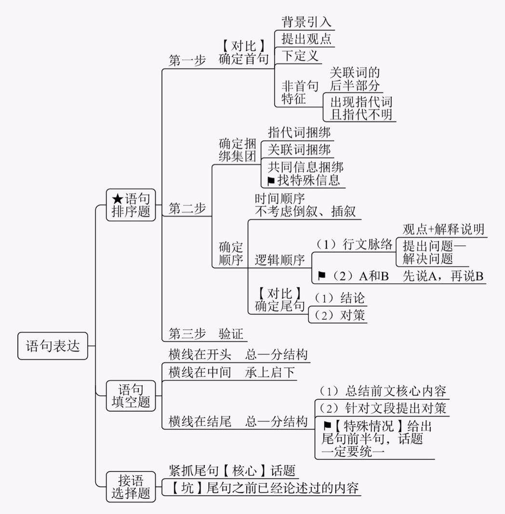技巧一 分步解题
这个技巧是贯穿全部的重点，是一种思维方式
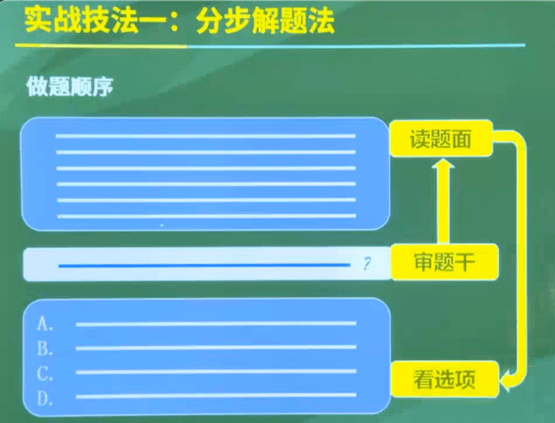技巧二 压缩替换法
长句转短句
- 长句转换为短句
- 依赖于关联词
技巧三 成分分析法
理解长难句
长难句找 主谓宾，宾语通常是一个复合结构或小句。
标志词, 每个句子都可以分开找重点
- 的—-定语（前置）
- 地—-状语（前置）
- 得—-补语（后置）
技巧四 背景铺垫法
背景为了引出重点，背景不重要
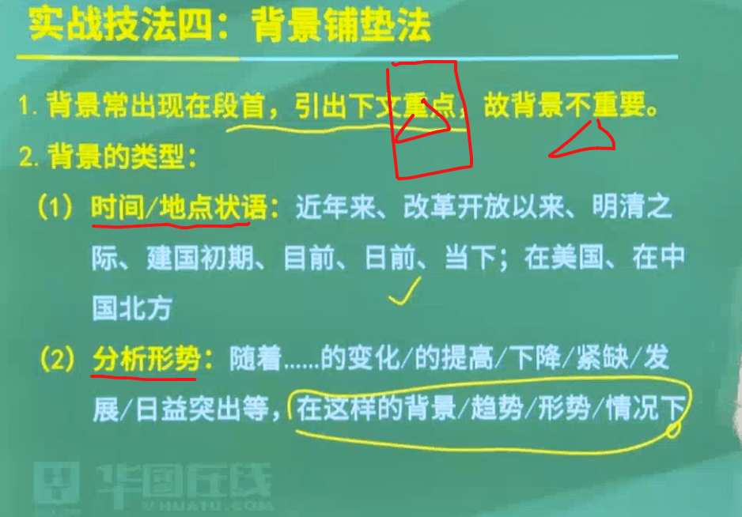 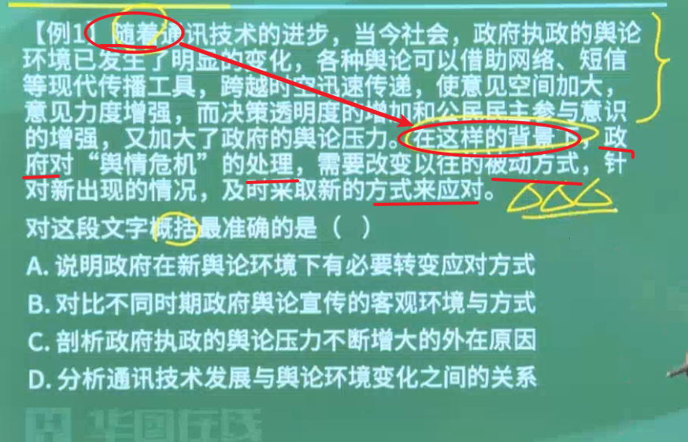 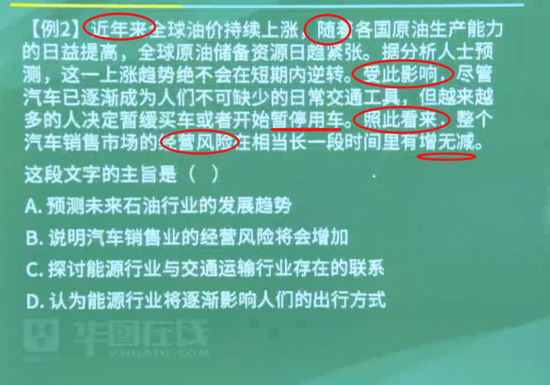技巧五 主体排除法
选项的陈述主体要与原文保持一致
什么是主体？
- 可以是主语
- 文章围绕这个东西展开，类似：主题。
找到主体后，就可以直接排除一些选项。
- 找主体
- 排除非主体选项
- 对比剩余选项差异
- 从题干中找关键词 与 第三步 对比
视频中排除A B 后，直接根据 厂家 二字排除 D。。。
技巧六 指代引导法
文章中有出现 宏观指代【指代上文的宏观内容】，则该句重要，往往承担文段的主要观点。
🔺并非所有的代词都重要！ 必须是宏观指代
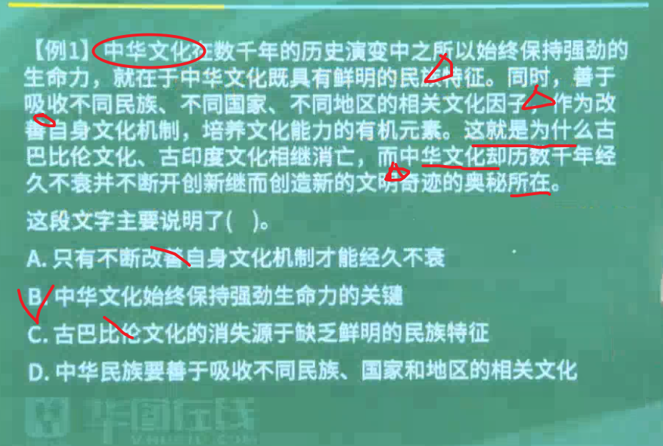 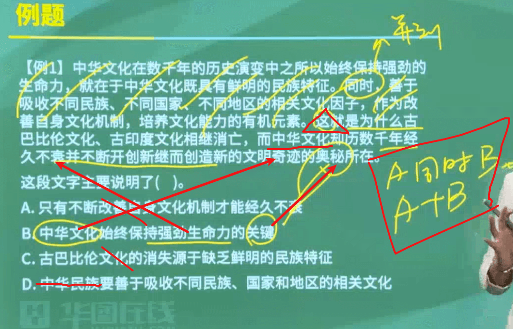 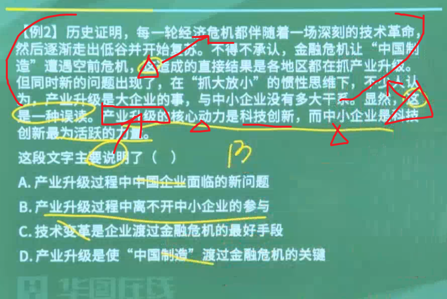技巧七 援引观点法
引出来的是重点！
- 作用：为了引出之后作者的观点，重点阅读援引之后的语句
- 类型
- 正向援引：正如 XXXX， 因此/所以
- 反向援引：一家之言【有人、大多数人、有看法、通常、传统。。】 然而、但是等
| 前半句 | 后半句 | |
|---|---|---|
| 正向援引 | 正如 XXXX | 因此/所以 |
| 反向援引 | 一家之言 【有人、大多数人、有看法、通常、传统】 |
然而、但是等 |
🔺🔺
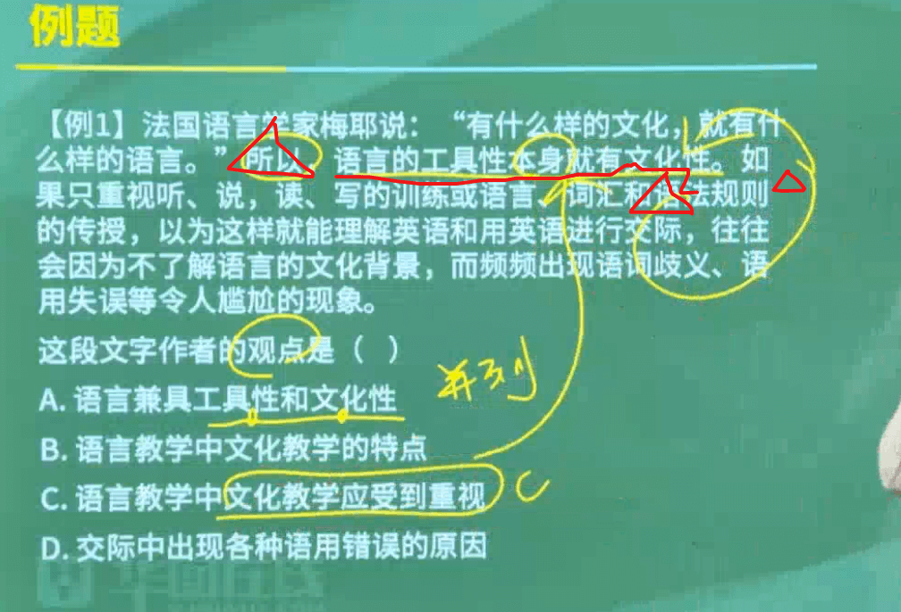
技巧八 表达倾向性
- 注意把握文中的表达倾向性
- 类型
- 积极的倾向性
- 消极的倾向性
- 从表面上看
- 看上去
- 似乎、好像
- 所谓
- 遗憾的是
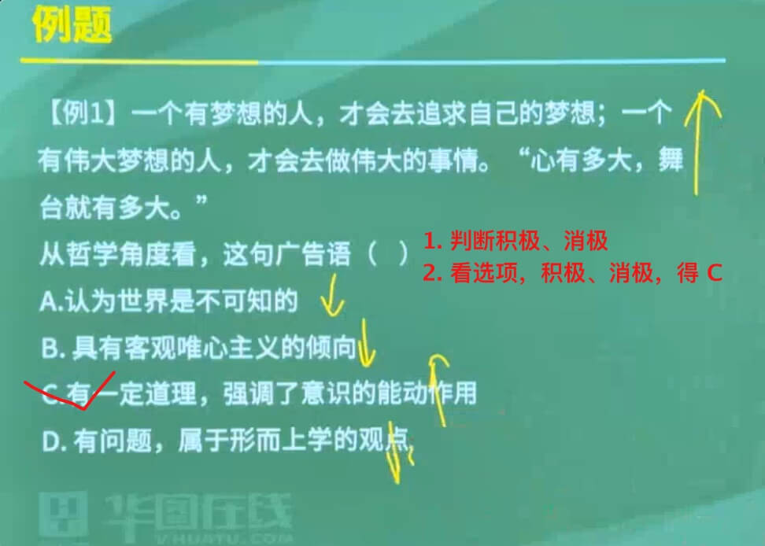 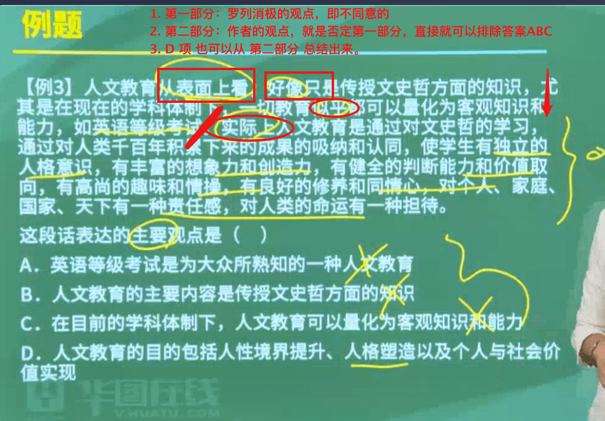积极的 =》 上箭头 ⬆️
消极的 =》 下箭头 ⬇️
技巧九 举例论证法
- 作用
- 为了证明【前后】出现的观点，例子本身不重要，可以忽略或快速浏览
- 围绕例子的选项不是主旨题的答案
- 类型
- 显性：比如、例如、XX就是一个例证、以XX为例
- 隐性：数据、年份、人名、地名、术语。

技巧十 反面论证法
- 作用
- 为了说明证明观点的权威性与合理性
- 类型
- 正 + 反： 不要看反面论证，直接看前面
- 你今天要带伞，不带伞会淋雨【后半句不需要看】
- (正) + 反：通过反面论证退出正面观点
- 如果不。。那么不。。
- 如果没有。。那么没有
- 例子
- 如果不带伞就淋雨 —> 需要带伞
- 正 + 反： 不要看反面论证，直接看前面